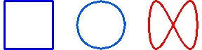
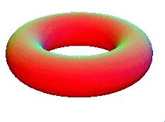
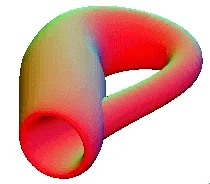

What is Topology?
Topology studies properties of spaces that are invariant under any continuous deformation. It is sometimes called "rubber-sheet geometry" because the objects can be stretched and contracted like rubber, but cannot be broken. For example, a square can be deformed into a circle without breaking it, but a figure 8 cannot. Hence a square is topologically equivalent to a circle

1. General Topology or Point Set Topology:
General topology normally considers local properties of spaces, and is closely related to analysis. It generalizes the concept of continuity to define topological spaces, in which limits of sequences can be considered. Sometimes distances can be defined in these spaces, in which case they are called metric spaces; sometimes no concept of distance makes sense.
2. Combinatorial Topology:
Combinatorial topology considers the global properties of spaces, built up from a network of vertices, edges, and faces. This is the oldest branch of topology, and dates back to Euler. It has been shown that topologically equivalent spaces have the same numerical invariant, which we now call the Euler characteristic. This is the number (V - E + F), where V, E, and F are the number of vertices, edges, and faces of an object. For example, a tetrahedron and a cube are topologically equivalent to a sphere, and any “triangulation” of a sphere will have an Euler characteristic of 2.
3. Algebaric Topology:
Algebraic topology also considers the global properties of spaces, and uses algebraic objects such as groups and rings to answer topological questions. Algebraic topology converts a topological problem into an algebraic problem that is hopefully easier to solve. For example, a group called a homology group can be associated to each space, and the torus and the Klein bottle can be distinguished from each other because they have different homology groups.
 
Torus klein bottle
4. Differential Topology:
Differential topology considers spaces with some kind of smoothness associated to each point. In this case, the square and the circle would not be smoothly (or differentiably) equivalent to each other. Differential topology is useful for studying properties of vector fields, such as a magnetic or electric fields. Topology is used in many branches of mathematics, such as differentiable equations, dynamical systems, knot theory, and Riemann surfaces in complex analysis. It is also used in string theory in physics, and for describing the space-time structure of universe.